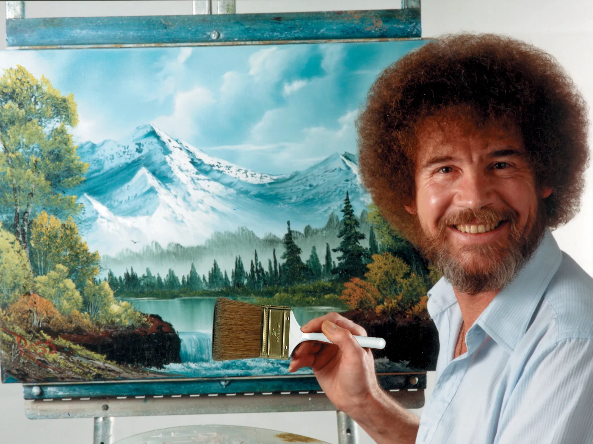

Where Every Day is a Happy Little Adventure
ボブ・ロスは単なる画家ではなく、平和と創造性、そして喜びの象徴でした。彼は1983年から1994年にかけて放送されたテレビ番組 The Joy of Painting（ボブの絵画教室）のホストとして知られ、穏やかな声と優しい語り口で、30分のうちに白いキャンバスを美しい風景画へと変えてしまう驚異的な技術で世界中の視聴者を魅了しました。
彼の特徴的な技法である ウェット・オン・ウェット（湿った絵の具の上に直接描く技法）や、柔らかく自然な色使いは、初心者でも気軽に絵を楽しめるように工夫されていました。「幸せな小さな木々」や「失敗なんてないんです。ただの素敵な偶然ですよ」といった彼の名言は、多くの人々に恐れず創造することの大切さを教えてくれました。
1995年に他界した後も、彼の作品や番組は世界中で愛され続けています。ボブ・ロスの穏やかな筆さばきを眺めているだけで、まるで瞑想のように心が癒される――彼の芸術は今もなお、「誰もがアートを楽しめる」ということを私たちに思い出させてくれます。
